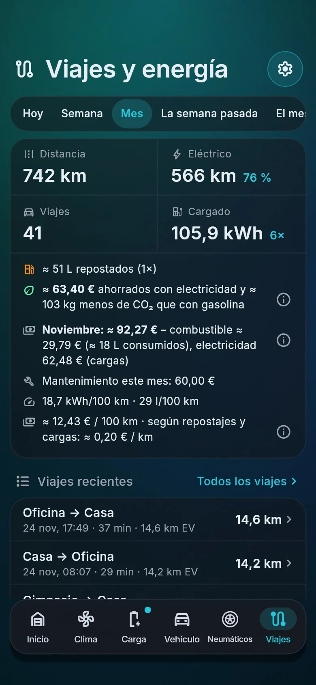
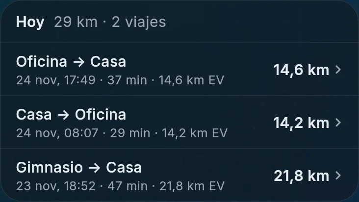
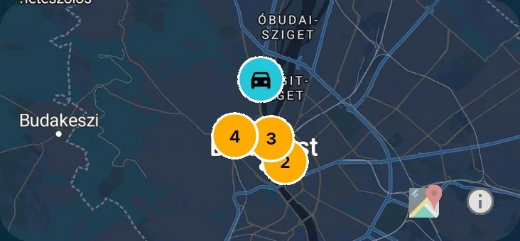
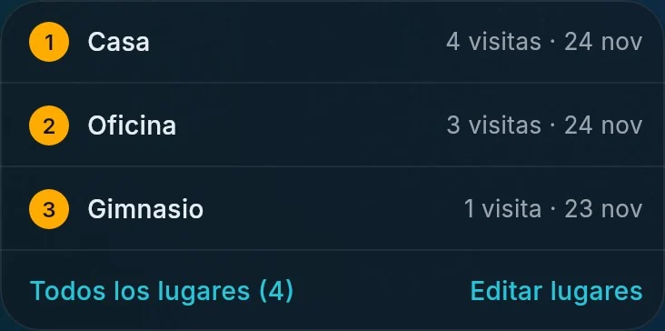
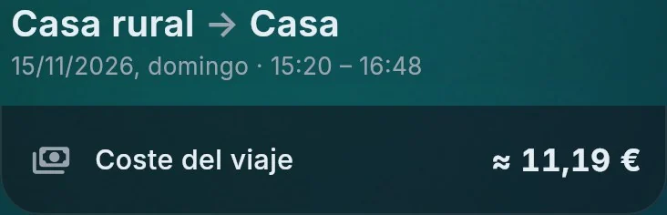
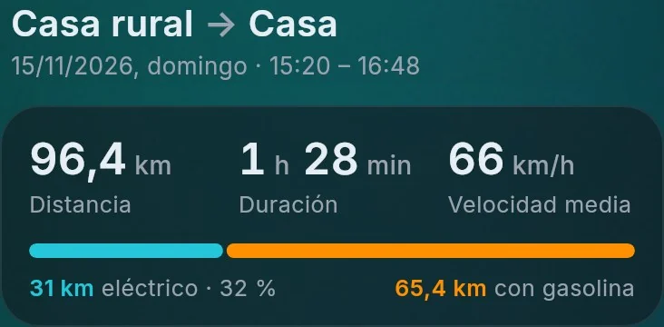

Viajes y rutas
Cada viaje, registrado automáticamente.
Sin botón de inicio ni libro de viajes que rellenar. Carmeo detecta cada viaje y guarda la distancia, el porcentaje eléctrico y el coste.


Tu día como una línea de tiempo.
Los viajes de hoy de un vistazo – y una línea de tiempo del día con todo lo demás: cargas, bloqueos y desbloqueos, el encendido de la climatización, en el orden en que ocurrieron.


Dónde has estado.
El mapa de viajes muestra los lugares que has visitado en los últimos 7 o 30 días, numerados según las veces que has estado allí. Pon nombre a tus sitios habituales y aparecerán con ese nombre en todas partes. Pon nombre a un lugar donde lo ves – con una pulsación larga. Márcalo como garaje: allí no hay aviso de helada y la preclimatización sigue la temperatura del garaje.


Cada viaje en detalle.
Distancia, tiempo y velocidad media, cuánto se hizo en eléctrico y cuánto con gasolina, la energía y el combustible consumidos – y lo que ha costado el viaje con tus propios precios. Junto a los viajes, el nombre de la localidad más cercana – calculado en el propio servidor de Carmeo, sin servicios externos.
El registro de ubicación se puede pausar en cualquier momento. Los viajes se guardan entonces sin lugares.
Pruébala en tu propio coche.
Carmeo es gratis. Únete al grupo de prueba abierta en iPhone o Android.